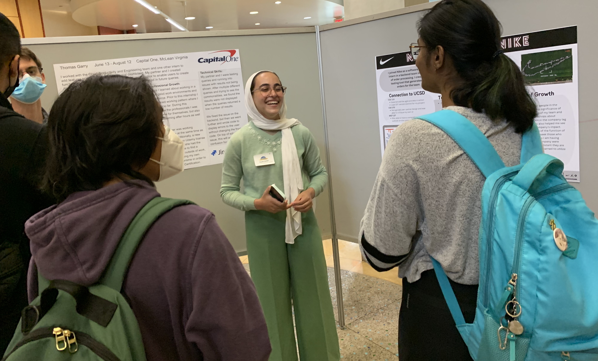
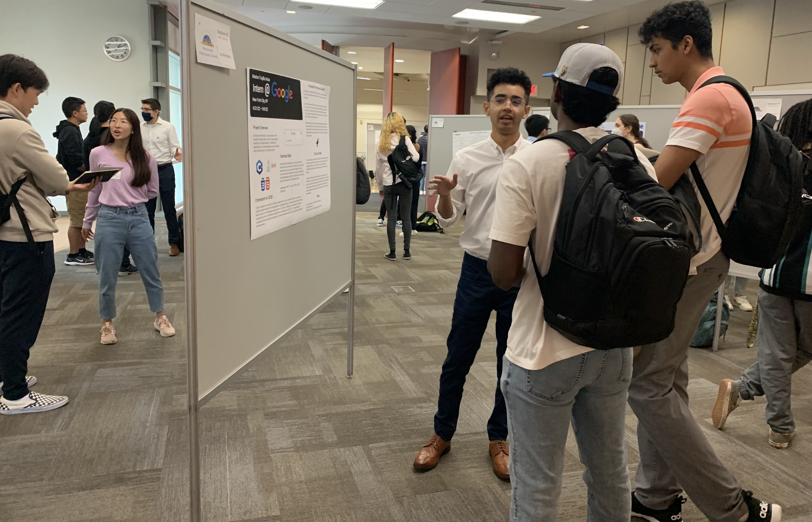

Tenth Annual CSE Summer Internship Symposium --- October 26, 2023, 2pm-4pm
Poster presentation assignments

The UC San Diego CSE Summer Internship Symposium highlights CSE students' achievements during their summer internships.
- Students
- See what your peers have worked on all summer, and get tips and ideas for applying to internships
- Faculty members
- Applaud our students' accomplishments and reinforce the connections between internships and UCSD academics
- Alumni
- Meet current students and be energized by their projects and walk down memory lane
- Internship supervisors
- Share your interns' accomplishments and meet some of our younger majors
CSE Summer Internship Symposium: Quick facts
- Annual poster session
- Poster session held on UC San Diego campus in September or October each year.
- 1000+ student posters since 2014
- Each year, roughly 100 students present during the Symposium to other students, faculty, and industry guests.
- Awards presented
- Awards recognize outstanding presentations on Technical Skills, Personal and Professional Development, and Ethics and Society.
- 400+ companies hosting internships
- Diverse companies hosting internships located in San Diego county, Santa Barbara, Bay area (San Francisco, Mountainview, San Jose, Palo Alto, etc.), Chicago IL, Seattle WA, Austin TX, Dallas TX, New York City, Portland OR, Milwaukee WI, Bethesda, MD Warren MI, Los Alamos NM, Chantilly VA, Provo UT, Bentonville AK Washington DC, Boston MA, Taipei Taiwan, Remote



